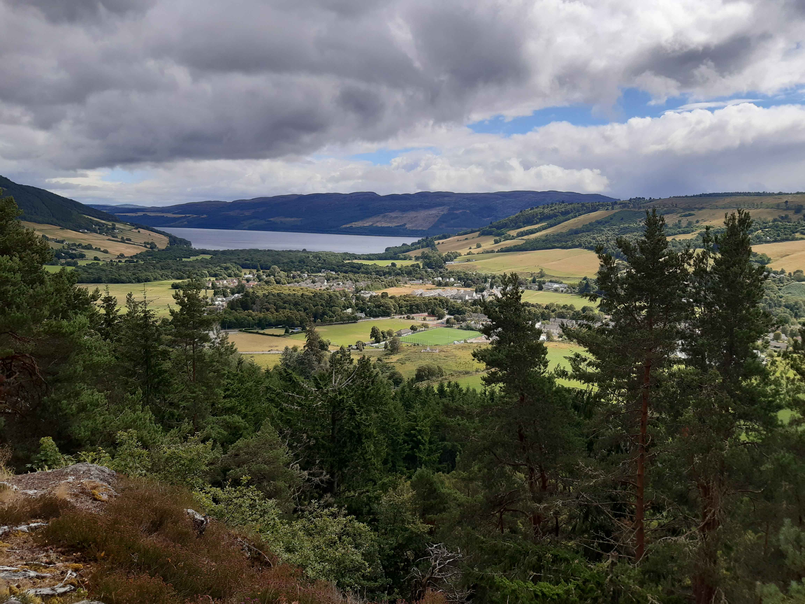
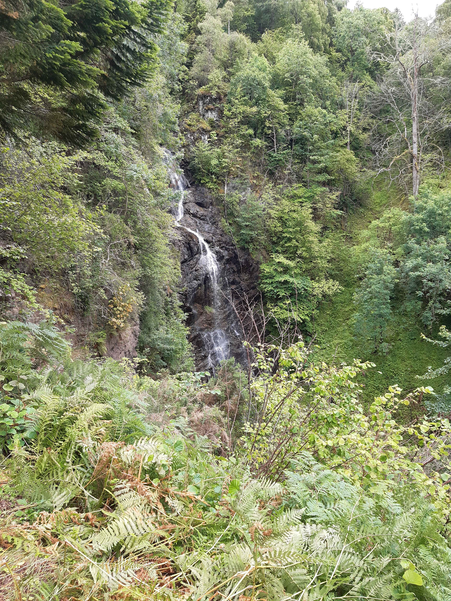
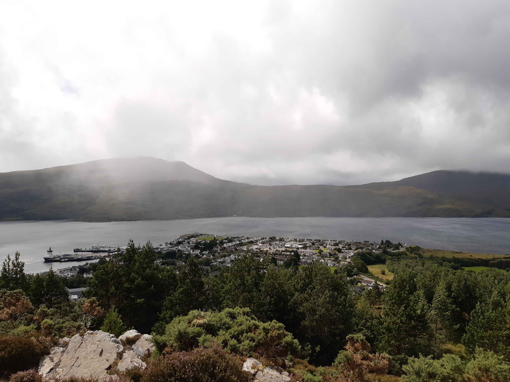
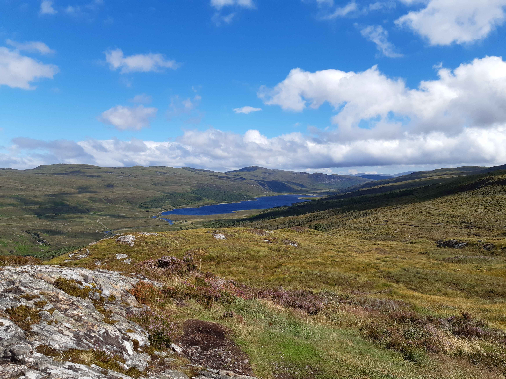

Retour
Highlands
Cascade de Divach
- Type : boucle
- Description de l'itinéraire : Drumnadrochit - Craig Mony - Divach Falls - Lewiston
- Distance : 10 km
- Dénivelé positif : 300 m
- Point le plus bas : 29 m
- Point le plus haut : 162 m
- Cotation en l'absence de neige : T2
- Intérêt : 2/5
- Date : 3/8/21
- Photos :
 Le loch Ness
 La cascade de Divach
Ullapool Hill
- Type : aller-retour
- Description de l'itinéraire : Ullapool - Ullapool Hill
- Distance : 5 km
- Dénivelé positif : 300 m
- Point le plus bas : 0 m
- Point le plus haut : 261 m
- Cotation en l'absence de neige : T2
- Intérêt : 3/5
- Date : 2/8/21
- Photos :
 Ullapool et le loch Broom
 Le loch Achall